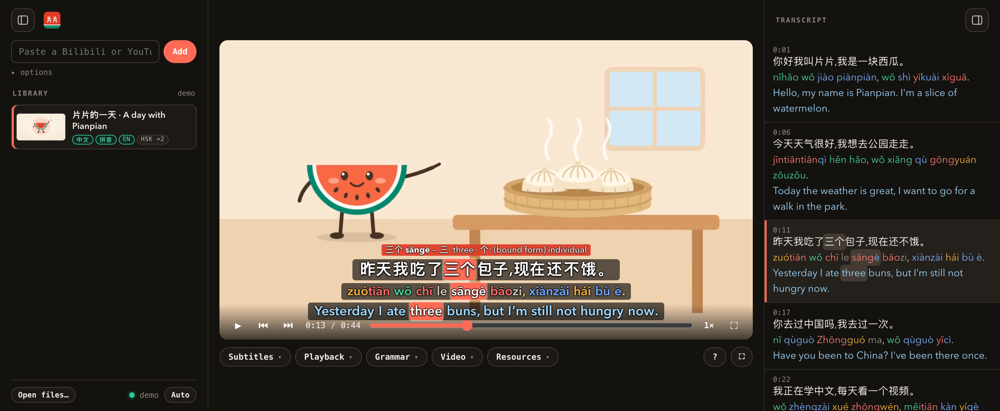
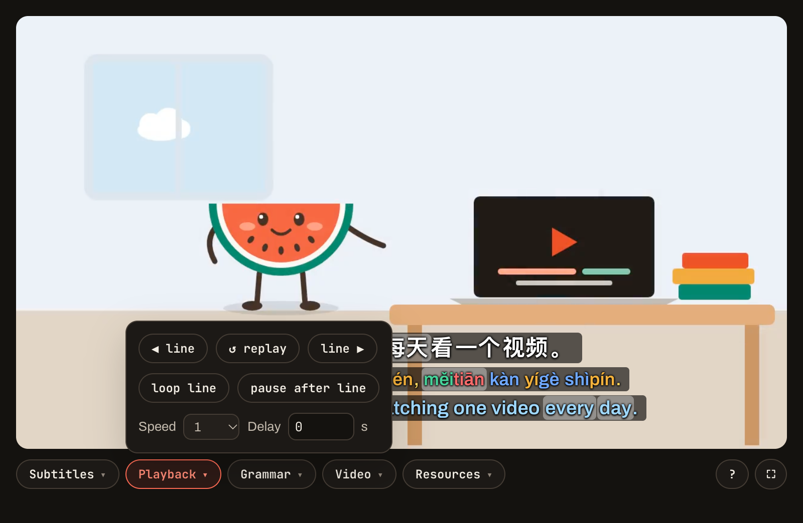
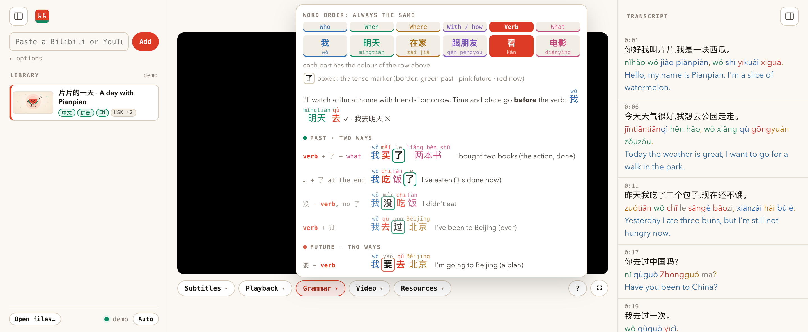

Paste a Bilibili or YouTube link. Pianpian makes Chinese, pinyin and English subtitles on your Mac, then lets you hover any word and practise line by line.
This is the real app. Play the video, hover a word, open the menus. You can also drop a video of your own on it: it plays from your disk and nothing is uploaded.
Each word shows its pinyin, a dictionary meaning, its HSK level and its measure words. The same word lights up in the pinyin and in the English, so you see which part of the translation it is.

Go through a video one sentence at a time, at your own speed. Say each line out loud after the speaker (shadowing) until it sounds right.

A cheat sheet for Chinese word order, with every part in its own colour and the pinyin above each word. Optional marks under 了, 过, 在 and 要 tell you whether a sentence is about the past, now, or later.

Small things that make it pleasant to study with every day.
Uses the platform's subtitles when there are some; otherwise Whisper hears the Chinese. Burned-in subtitles are read with macOS's own text recognition.
Show any mix. Pinyin is coloured by tone, and it can sit right above each word instead of on its own line.
The word being said lights up as it is spoken, so your eyes and ears stay on the same word.
Each video in your library shows the HSK level that covers 90% of its words, so you know what to watch next.
Speech recognition and translation are local models. No account, no API key, no upload. Videos stay in a folder you choose.
Every video is also saved as one MKV with all the subtitle tracks, for IINA, VLC or mpv, on any device.
From a link to a video you can study, in about a minute for every ten minutes of video.
From Bilibili or YouTube, or drop a video file on the window.
Chinese from the platform or from Whisper, pinyin with jieba and pypinyin, English from Tencent's Hy-MT2 model.
Click any line to jump to it, hover any word, loop what you want to say yourself.
Yes. Pianpian is free and open source (MIT licence). There is no account and nothing to subscribe to.
Macs with Apple Silicon (M1 or newer) on macOS 14 Sonoma or newer. It needs about 4 GB of disk, mostly for the two models. The check at the top of this page tells you if yours can.
It asks where to keep your videos and its tools, shows what it will download (its engine, about 0.65 GB, and the speech and translation models, 1.6 GB and 1 GB), and installs them once, with progress. From mainland China it picks the faster mirrors by itself.
No. Videos are downloaded to your Mac and processed there. The app only goes online to download videos you ask for, its tools on the first start, and updates.
Bilibili, YouTube and most video sites, plus any video file you already have. Use it for videos you are allowed to watch, and don't re-upload them.
Pianpian isn't signed with a paid Apple developer certificate yet, so the first time macOS asks. Open it once, then go to System Settings → Privacy & Security and choose Open Anyway. The source code is public on GitHub.
Not yet. The app relies on Apple Silicon for its models today; a Windows version is planned.
Free for Mac. One piece at a time: 一天一片.